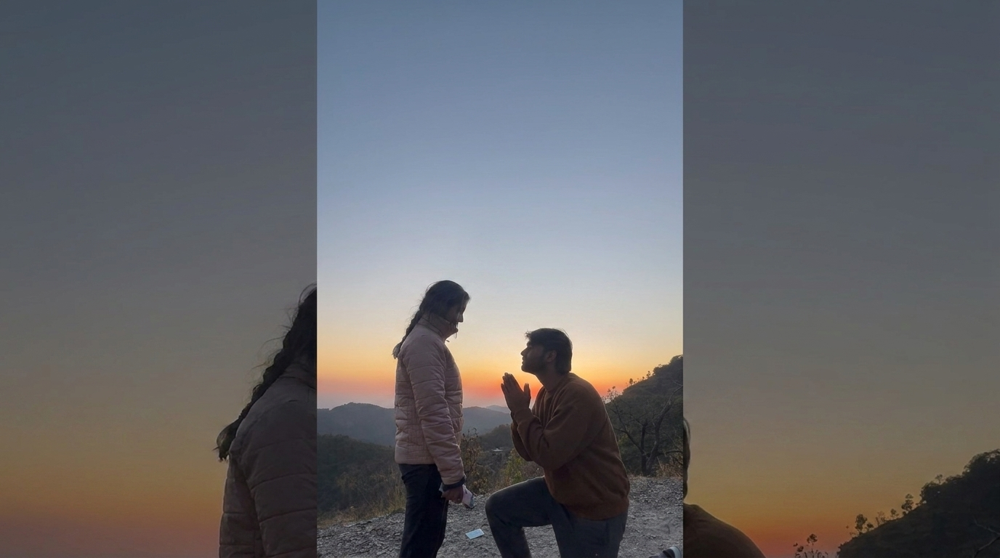

I want to say sorry for what I said that stupid sa para. When I said that I was giving up and that maybe parting our ways was the best option, those weren’t words coming from my heart. They came from a place where I was hurt and I couldn’t even think straight.
Yk sometimes when emotions get too loud, you end up saying things that don’t even represent what you truly feel. That’s exactly what happened with me.
The truth is… I don’t want to give up on you. I never have. And I honestly don’t think I ever will.
You are not someone I can just walk away from because things got difficult. Loving you has never been the problem. The problem was that I let my hurt become louder than my love, and I am really really sorry for that.
I know saying sorry doesn’t magically undo the pain I caused, but I hope you know how genuine this apology is. I never wanted you to feel like my love for you can ever change or that I would leave when things get hard.
If anything, I want to learn how to stay better, communicate better, and love you better.
Yk, when I imagined a future, it was always with you in it. So saying that we should part ways wasn’t me choosing what I wanted, it was me speaking from exhaustion and pain. Looking back, I hate that I let those emotions speak for me.
I don’t promise that we’ll never fight again because we’re both human. But I do promise that I don’t want to reach a point where giving up becomes an option.
I want us to choose conversations over silence, understanding over assumptions, and each other over our egos.
I’m really sorry, my Bhura. Thank you for not letting one bad moment define everything we’ve built together.
I love you more than my anger, more than my fears, and definitely more than the words I said that day.